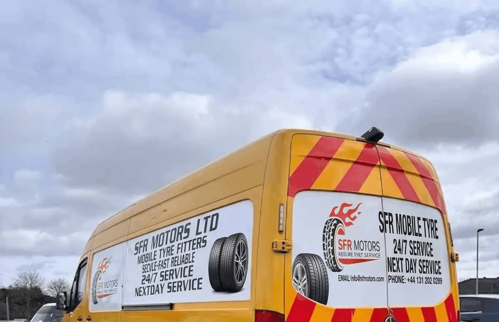
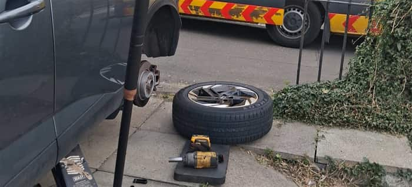
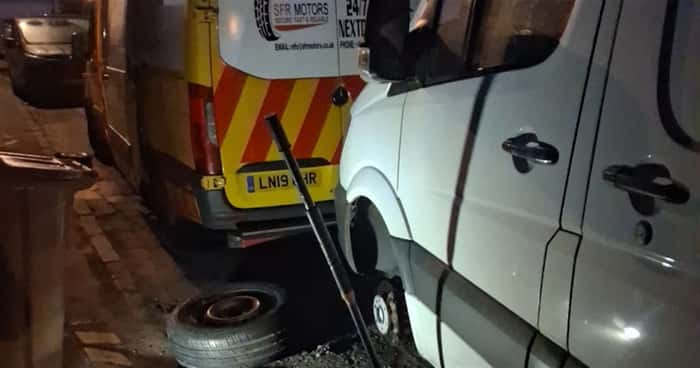

Mobile Tyre Fitting
New tyre fitting at your home, workplace or roadside, no garage visit needed. Our vans carry a wide range of sizes and brands to get you moving fast.
Learn More
24/7 Emergency Tyre Repair Bathgate
SFR Motors Ltd provides reliable mobile tyre fitting, flat tyre repair and puncture repair across West Lothian. We bring expert service directly to your home or workplace.
Home, workplace or roadside
Day or night
Professional mobile tyre assistance
Experienced and trusted service
Fully equipped mobile fitting vans covering Bathgate and West Lothian, 24/7 — we bring the workshop to your home, workplace or the roadside.
New tyre fitting at your home, workplace or roadside, no garage visit needed. Our vans carry a wide range of sizes and brands to get you moving fast.
Learn MoreWorn, damaged or flat tyre swapped on the spot, 24/7. We match the correct tyre for your vehicle and fit it safely wherever you're parked.
Learn MoreSafe, industry-standard puncture repair carried out on-site in Bathgate and beyond. A quick inspection tells you if your tyre can be repaired or needs replacing.
Learn MoreLost your locking wheel nut key? We remove locked wheel nuts on-site using specialist tools, without damaging your alloys.
Learn MoreScheduled or emergency tyre cover for vans, fleets and trade accounts, minimising vehicle downtime with fast on-site response across West Lothian.
Learn MoreSpecialist mobile fitting for caravan and trailer tyres, checked and changed at your storage site or pitch so you're ready for the road.
Learn More
Professional mobile tyre assistance at your home, workplace or roadside — available 24/7.
We bring professional tyre services directly to you.
Call or request a quote and tell us what tyre service you need.
Our mobile tyre fitter comes to your home, workplace or roadside location.
We complete the tyre service professionally and get you moving again.
“Very pleased with service. Turned up within an hour as I was located in centre of Edinburgh. No fuss with tyre change and he was very pleasant to speak with and explained what had happened to my tyre. All in all would highly recommend this service if required.”
“Great service! So much so that the tyre fitter was here at our house within 30 minutes of first contact! Very professional, efficient, and got my wife’s car sorted within a matter of minutes. Fair pricing and excellent customer communication. Thoroughly recommend for anyone needing urgent tyre work.”
“Had a puncture in my tyre and phoned a few people and SFR Motors were the only ones that answered my call. So easy to communicate with and make payment too! He was there within an hour of the call and got my tyre changed very fast, lovely friendly guy can’t recommend him enough!”

SFR Motors Ltd provides convenient mobile tyre fitting and repair, bringing professional tyre assistance directly to you instead of the other way around. Our fully equipped vans and experienced fitters handle everything from a single puncture to a full set of new tyres, wherever your vehicle happens to be.
Yes. We come to your home to fit, repair or replace tyres, so you don't need to drive to a garage or wait in a queue.
Yes. SFR Motors Ltd offers 24/7 mobile tyre assistance, including emergency callouts outside normal working hours.
We cover Bathgate and the wider West Lothian area, plus Edinburgh, Livingston, Falkirk, Linlithgow, Armadale, Broxburn and surrounding towns across Central Scotland.
In most cases, yes. Our mobile fitters carry out puncture repairs on-site where it's safe to do so. If a tyre is beyond repair, we'll advise a replacement instead.
Yes. If your tyre can't be repaired, we carry replacement tyres and can fit a new one at your location, day or night.
Yes — let us know your preferred brand and size when you get in touch, and we'll do our best to source and fit it for your vehicle.
Yes. If a locking wheel nut is lost, seized or damaged, our fitters can remove it on-site using specialist tools.
Call us on 0131 202 0289, message us on WhatsApp, or use the contact form on our website to request a quote or book a callout.
Tell us what you need and where you are — we'll get back to you with a price and an arrival time. Fields marked * are required; the rest just help us prepare.

Get professional tyre assistance wherever you are. Contact SFR Motors Ltd today for fast and reliable mobile tyre service.